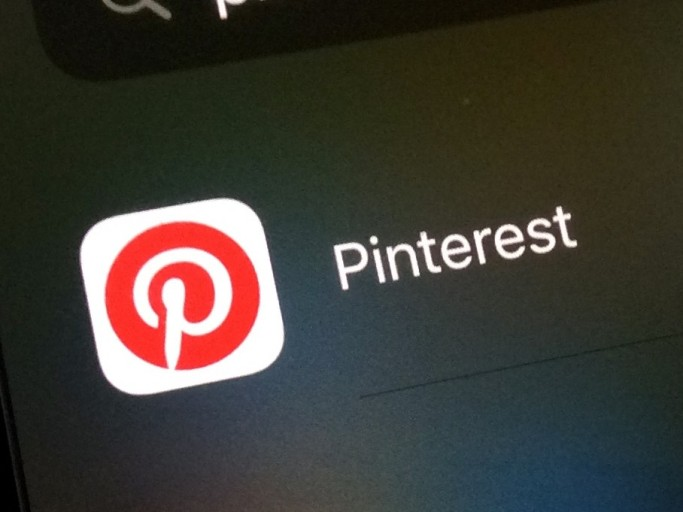

Pinterst
벽에 물건을 고정할 때 쓰는 핀(Pin)과 ‘관심사’를 뜻하는 인터레스트(Interest)의 합성어인 핀터레스트는 온라인에서 자신이 관심 있는 이미지를 핀으로 콕 집어서 포스팅하고, 이를 페이스북이나 트위터 등 다른 소셜네트워크(SNS) 사이트와 연계해 지인들과 공유하는 이미지 기반 소셜네트워크 서비스다. 사무실 벽이나 냉장고 등에 할인 쿠폰, 마음에 드는 옷이나 가방 사진, 맛있는 음식의 레시피 등을 핀으로 고정해놓는 소비자들의 일상생활에서 아이디어를 얻었다.
핀터레스트를 설명하는 표현들은 다양하다. 사진 공유 SNS라 하기도 하고 온라인 스크랩 사이트라고 표현하기도 한다. 핀터레스트 자체적으로는 자신들의 서비스를 ‘비주얼 소셜 큐레이션 서비스’라고 칭했다.1) 소셜 큐레이션을 확산시킨 대표 서비스로 2010년 3월 서비스를 시작했는데 2년 만인 2012년 3월 기준 미국 방문자 순위에서 페이스북과 트위터에 이어 3위를 기록했다.
유저 활동의 중심이 콘텐츠 생산이 아니라 수집에 있기 때문에 핀터레스트엔 아예 글을 쓰는 기능조차 존재하지 않는다. 모든 게 이미지 중심이다.
미술관이나 박물관에서 큐레이터가 제한된 전시공간에 어떤 작품을 전시할지 결정하듯이 핀터레스트의 이용자들은 개개인이 큐레이터가 되어 소셜미디어라는 공간에 자신이 고른 이미지들을 포스팅하고 이를 다른 사람과 공유하는데, 페이스북마저 긴장시킬 정도로 인기가 하늘 높은 줄 모르고 치솟고 있다.
한국에서도 핀터레스트는 주목받고 있다. 2013년 2월 홍보 회사 KPR 소속 소셜커뮤니케이션연구소가 국내 115개 기업과 공공기관 소셜미디어 담당자를 대상으로 실시한 SNS 활용 계획 등에 대한 온라인 설문 조사에 따르면 홍보 창구로 주목받던 트위터의 영향력은 떨어지고 핀터레스트와 유튜브 등 이미지와 영상을 이용한 SNS가 주목을 받은 것으로 나타났다. 소셜커뮤니케이션연구소는 간단하고 재밌게 볼 수 있는 이미지와 영상을 중심으로 한 SNS가 향후 인기를 끌 것이라고 전망했다. 조종완 소셜커뮤니케이션연구소 전임연구원은 “외국은 핀터레스트, 인스타그램 등 이미지를 기반으로 한 SNS가 자리를 잡았다”며 “국내에서도 유튜브를 포함해 이미지와 영상 SNS가 성장할 것으로 보고 있다”라고 말했다.